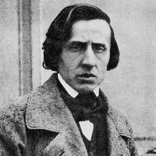

Compositeurs › Frédéric Chopin

Frédéric Chopin
Le poète du piano : il a écrit presque uniquement pour cet instrument et a inventé une nouvelle façon de le faire chanter.
Sa vie
Il naît en 1810 près de Varsovie, d'un père français et d'une mère polonaise. À sept ans, il publie sa première polonaise et, adolescent, il est déjà célèbre en Pologne comme pianiste.
En 1830, il quitte sa patrie et s'installe l'année suivante à Paris, où il ne joue presque jamais dans les grandes salles : il préfère les salons et les leçons. Il y rencontre les grands artistes de son temps et vit une longue relation avec l'écrivaine George Sand.
Atteint de tuberculose, il meurt à Paris à 39 ans. Il est enterré au cimetière du Père-Lachaise, mais son cœur, comme il l'avait demandé, a été rapporté à Varsovie et se trouve dans l'église Sainte-Croix.
Portrait : Louis-Auguste Bisson (1849), domaine public, sur Wikimedia Commons.

Anecdotes
- Les 24 Préludes op. 28 ont été achevés pendant l'hiver 1838-39 à Majorque : selon George Sand, le Prélude n° 15 « La goutte d'eau » évoque la pluie qui tombait sur la chartreuse de Valldemossa.
- La « Valse minute » ne dure pas une minute : « minute » signifie ici « petite ». En France, on l'appelle aussi la « Valse du petit chien ».
- Il ne voulait pas publier la Fantaisie-Impromptu : elle est parue en 1855, après sa mort, grâce à son ami Julian Fontana.
Au piano
- La mélodie doit chanter comme une voix : joue-la seule et écoute où elle respire.
- Le rubato (ralentir puis rattraper) est dans la main droite ; la gauche reste plus régulière.
- Change souvent la pédale, à chaque harmonie : écoute toujours que le son reste net.
Ses morceaux à apprendre 11 morceaux

Apprends-le note par note avec Piano Learning
Avec « Attends la note », le morceau s'arrête jusqu'à ce que tu joues la bonne touche, sur ton téléphone ou sur ton propre piano (l'appli t'écoute). Mains séparées, vitesse dès 10 %, partition toujours sous les yeux.
Télécharge-la gratuitement sur Google Play Gratuit comme La Campanella, la Marche turque, Jingle Bells et Frère Jacques. Des centaines d'autres morceaux avec un seul achat, sans abonnement.